English Club with Nataly
May 2, 2026 by Alexey Leonov
Speaking practice in mini-groups and a cozy atmosphere. The club is already 7 years old, and over that time we've built a community where language isn't the goal — it's a tool for live conversation, new connections, and warm get-togethers.
English Club with Nataly was born almost by accident. In 2017, Nataly, then a student at a language school, started hosting speaking sessions for beginners — and unexpectedly discovered that the speaking club format had become something much bigger for her than just language practice. Four months later, her own club was born.
Today, it's one of the coziest and most thoughtfully organized speaking spaces in Moscow: regular meetups every week, special formats, themed circles, rooftop sessions, and speed dating.
Our Format
Format: speaking sessions where you practice English in pairs and mini-groups. No lectures, no presentations, and no waiting in a line of ten people — you speak 90% of the time.
⏱ Session structure:
- 1.5–2 hours of pair conversations (partner switch every 15–20 minutes)
- A short break — grab a drink, catch your breath, get to know the rest of the group
- 25 minutes — games and mini-group chats (board games, discussions, open mic)
🗣 Why pairs?
- You speak way more than in a big circle format
- No fear of a large audience — it's just you and your conversation partner
- Every round is a new person: different accents, pace, topics
- The format works both for those who "understand everything but stay quiet" and those who chat freely
👥 Level: B1 and above. At the meetup, hosts pair participants by similar level — you won't have to drag your partner along or feel bored.
💬 Topics: the organizer prepares conversation starters and questions in advance, but you can take the conversation in any direction. No "scripted textbook dialogues" — just live talk.
Where we meet
Our meetups take place in cozy cafés in the city center — the kind of places where it's a pleasure to speak English and drink good coffee. We partner with three venues across Moscow, all within walking distance from the metro.
| Day |
Venue |
Address |
| Monday |
Coffeeshop Company |
Novoslobodskaya ul., 23 (m. Mendeleevskaya, exit 3) |
| Tuesday |
Cosmic Latte |
ul. Zamoryonova, 12/1 (m. Krasnopresnenskaya) |
| Wednesday |
Cosmic Latte |
Yakimansky per., 6/1 (m. Oktyabrskaya) |
| Thursday |
Coffeeshop Company |
Novoslobodskaya ul., 23 (m. Mendeleevskaya, exit 3) |
| Friday |
Cosmic Latte 💬 |
Yakimansky per., 6/1 (m. Oktyabrskaya) |
| Stars Coffee 🧩 |
ul. Gasheka, 6 (m. Mayakovskaya) |
| Saturday |
Stars Coffee |
ul. Gasheka, 6 (m. Mayakovskaya) |
| Sunday |
Stars Coffee |
ul. Gasheka, 6 (m. Mayakovskaya) |
| Cosmic Latte |
Yakimansky per., 6/1 (m. Oktyabrskaya) |
💬 — regular speaking session
🧩 — board games & chats
Special Formats
Beyond our regular speaking sessions, we host extra formats — each designed to bring people together in a different way. Whether you want to dive deep into a theme, play board games, or meet someone special, there's something for you.
💫 Interest Circles
Themed small-group discussions built around shared interests. Each meetup is dedicated to one topic — you talk in groups of 4–5 people with rotation, sharing personal experiences rather than giving "correct answers". Interest Circles are built around a range of interests our guests have in common:
🟡 Book Club
No specific book to read — just come ready to share your favourite authors and books, swap recommendations, and meet fellow bookworms.
🟣 Film Club
From the films you love or hate to your favorite directors and genres — let's dive into our preferences and everything film-related.
⚪️ Wellness Club
Let's talk about the key aspects of our well-being: diet, sleep, exercise, and mental health — and motivate each other to lead a healthier lifestyle.
🔵 Polyglot Club
Whether you speak a second foreign language or not, come get inspired by language learning experiences, exchange tips, and discover useful resources.
🔴 Business Club
We'll be discussing professional experiences, career moves, job search, and more — share your path and learn from others.
🟢 Travel Club
We'd love to hear your favourite travel stories and learn about the destinations you've explored or dream of visiting.
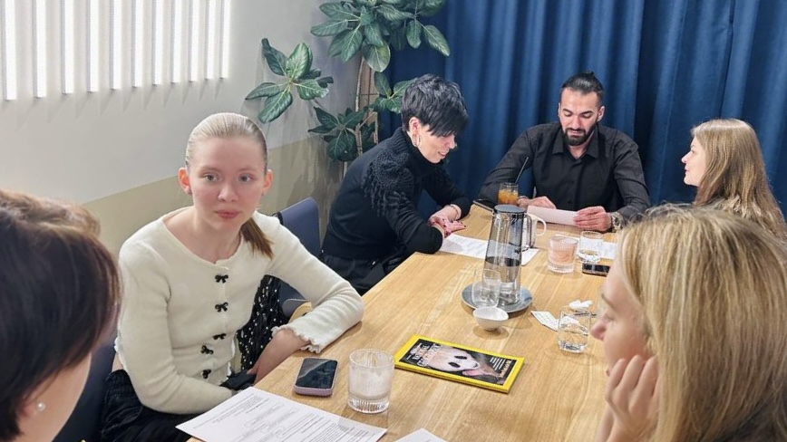
❤️🔥 English Speed Dating
Looking for someone you'll truly click with? At our speed-dating meetup, you'll make lots of acquaintances, have plenty of speaking practice in English, and maybe even find someone special. We've already held several speed-dating events, with almost 40 people attending each.
We rent a private venue just for our group, so there's no awkwardness of strangers watching. The evening starts with a group warm-up, then fast pair chats, free mingling, and light games — 3 hours total, so there's more time and less rush. Drinks and snacks are included, and you'll get a matching sheet to mark the people you connected with — matches arrive the next day. Spots are limited to 20 women and 20 men.
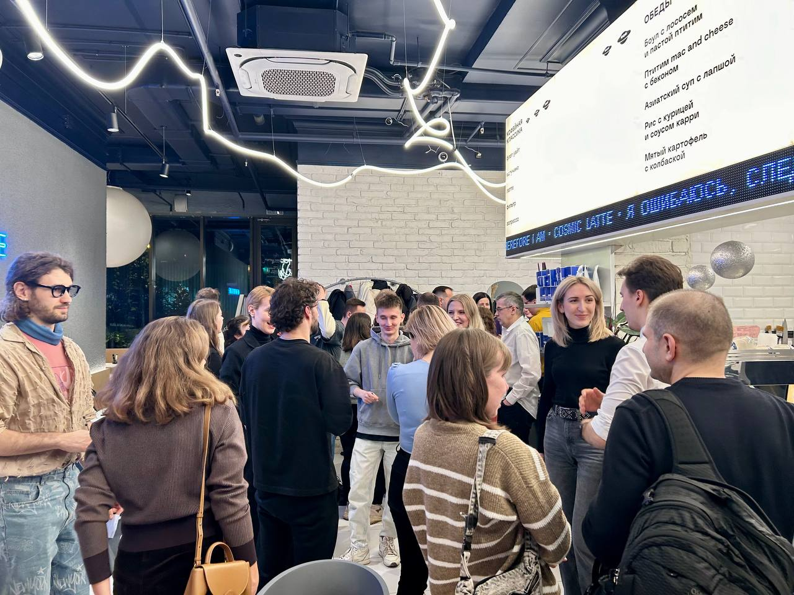
🧩 Board Games and Chats
We're delighted to host extra board game evenings — a relaxed way to practice English while actually having fun. No pressure to "perform," no grammar drills. Just pick a game and chat with the people around the table. 🎲
A typical evening kicks off with short warm-up games (5 Seconds Rule, storytelling, Crocodile), followed by two rounds of longer games — Imaginarium, Activity, Spyfall, Startup, and more. Don't worry if you don't know the rules, our host will help you wrap your head around them. The evening wraps up with small-group discussions or more games, whatever the table feels like.
Board game nights usually take place at Cosmic Latte or Stars Coffee — check the schedule or follow the channel for the next date. Price and registration are announced with each event separately.
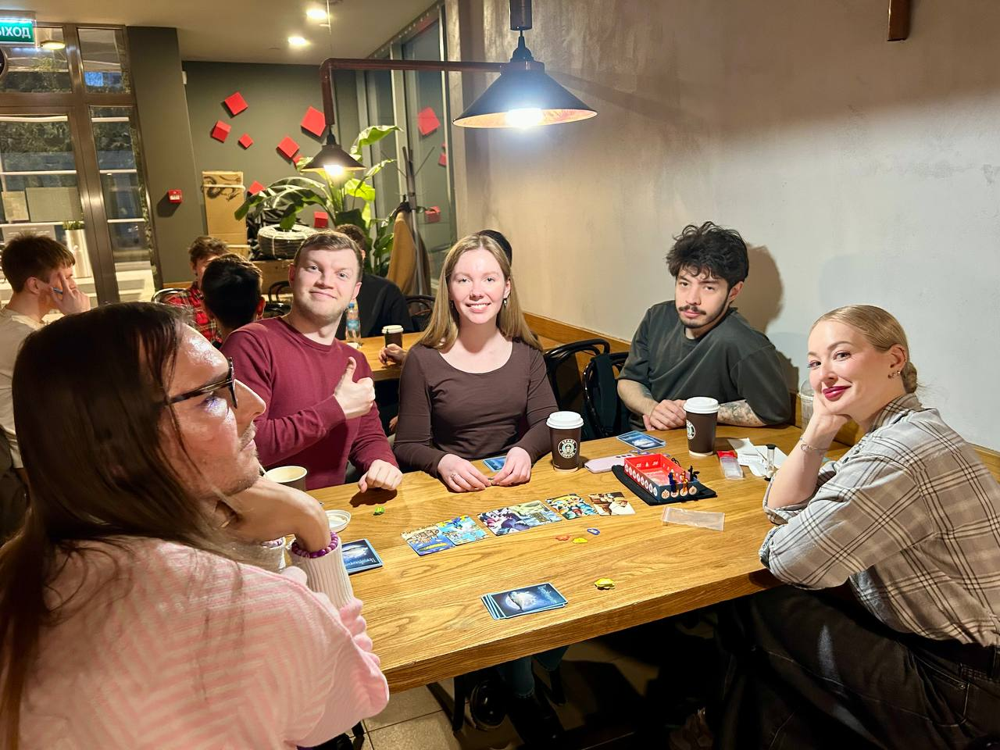
🌆 Rooftop Sessions and Public Talks
When the weather gets warm, we take our conversations to the rooftop. Our partner is Hitrovka — a restaurant with two summer verandas and a fabulous view of the city center. If the forecast cooperates, we go outside for chats and photo shoots. If not, we stay inside — but the elegant ambiance remains. 🥰
The format is the same you know and love: conversations in pairs and small groups, just with fresh air and a skyline backdrop. After the session, you can stay for a meal and more chats. We plan to make it a tradition — follow the channel not to miss the next one. ✨
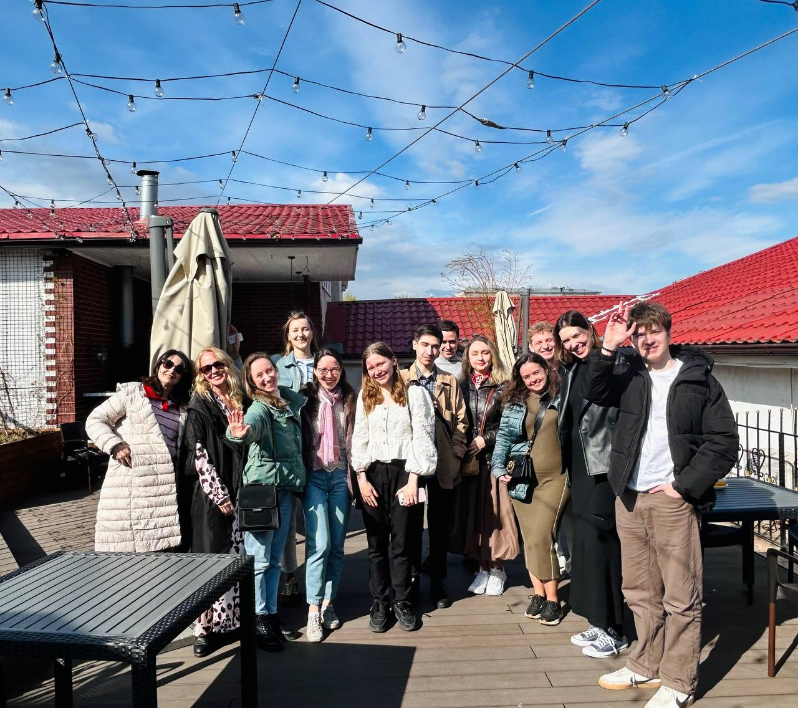
Price
Regular speaking sessions: 700 ₽ + order at the venue. Payment after the session, in cash or by bank transfer.
Interest Circles: 700 ₽ + order at the venue. Gift visits do not apply to extra events.
Board Games & Chats: 600 ₽ + order at the venue. Gift visits do not apply to extra events.
English Speed Dating: 1200 ₽ (includes soft drinks and snacks). 1000 ₽ for those who attended our previous speed dating events. You can also get a 30% discount on a Saturday speaking session taking place on the same day. Registration is via prepayment; cancellations and refunds are possible no later than 24 hours before the event.
Rooftop Sessions & Public Talks: announced with each event separately.
🎁 Loyalty card: every 7th visit to a regular speaking session is free.
🫶 Special offer for friends: bring a friend who has never been to the club — you both get a 50% discount. Contact @sknataly in advance to apply.
Registration
New guests can register on the website. If you've already been to the club, just come — no need to sign up again. For special formats, message to a host to book your spot.
We'd be happy to see you at our speaking club! ✨
From the Firehose
To All Newcomers
May 3, 2026 by Natalya Skachkova
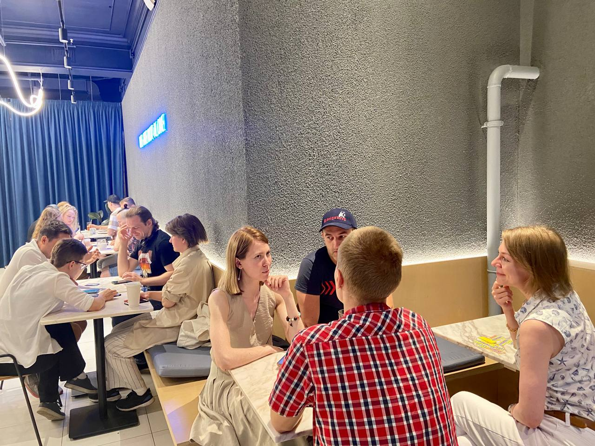
To all the new people joining us these days: Welcome aboard!
Naturally, before your first visit to the club, you might feel uncertain and even slightly nervous, as did some of our newcomers. However, there is no need to stress out about anything because:
🕊️ Our community is friendly and welcoming! We’re always pleased to see new participants and have a fruitful exchange of ideas, experiences, and thoughts. If you decide to attend the club regularly, each time, you’re going to see familiar faces and feel as if you were in a group of friends, and besides, you’ll be widening your social circle with new acquaintances.
🕊️ Our sessions are well-thought-out. As the host, I’ll make all our procedures clear to you, and I’ll be responsible for everything, while you can just relax. If in doubt, you can always reach out to me: @sknataly, or share your questions and suggestions in person at the sessions.
Without further ado, we invite everyone to join our sessions!
The Club's Story: Part 1
May 3, 2026 by Natalya Skachkova
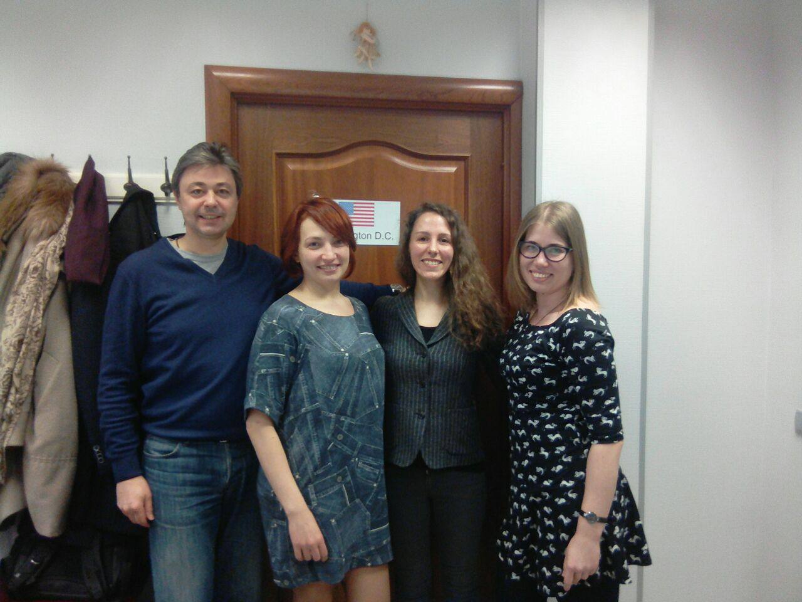
✨ August is a special month for our community. ✨ Seven years ago, on August 31, the very first speaking session of English Club with Nataly took place — and that's where the official history of the club begins.
I'm often asked how I came up with the idea. To be honest, it wasn't my brainchild. Back then, large speaking clubs in Moscow had already been around for years, and language schools were just starting to introduce the format as extra speaking practice for their students.
I happened to be a student at one of those schools when my teacher offered me to host a club for low levels. Ironically, I was only invited because the main candidate had changed her mind — I wasn't even supposed to be there. It was pure serendipity. Not my dream, not my passion — though we had fun! Only over time did I realize how great the club was: a place to meet like-minded people and ignite a real interest in English. My own club would be born just four months later.
To be continued…
The Club's Story: Part 2
May 3, 2026 by Natalya Skachkova
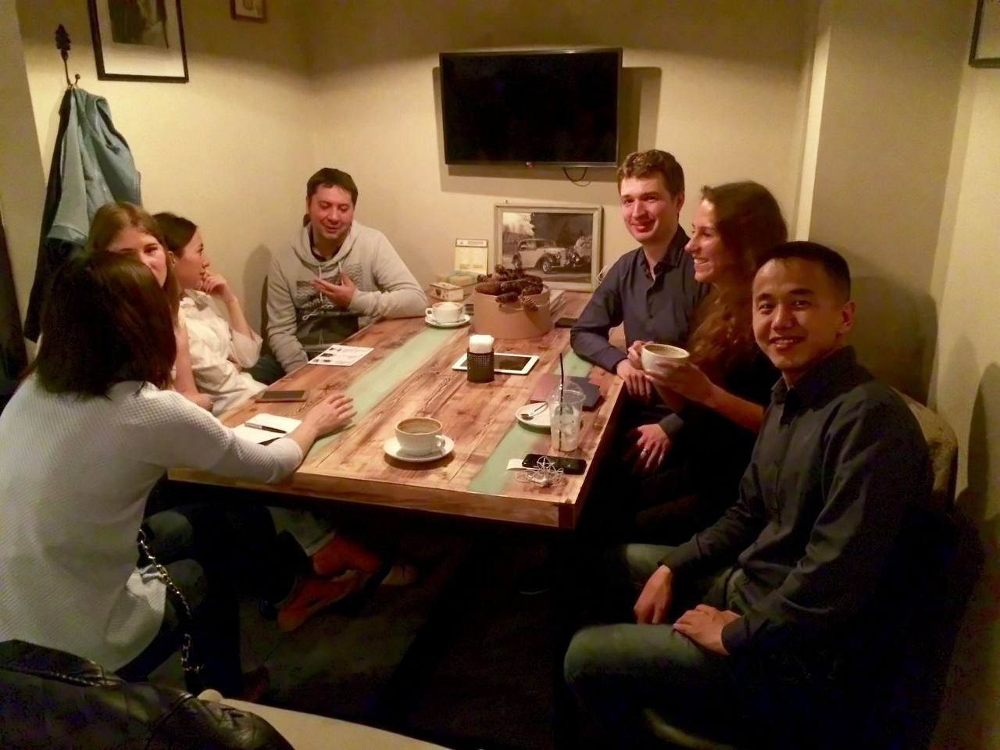
✨ The club's 7th anniversary is getting closer, so here comes the next chapter. ✨
My first experience of hosting speaking clubs was at a language school, and I thoroughly enjoyed it: coming up with the programme, designing all the materials myself, meeting and talking to new people, and — most importantly — speaking the language I'd been passionate about for years. But over time, things took an unexpected turn.
Let me back up a little. Native speakers are sought-after as the most desirable English teachers — in Russia and beyond. I used to be exactly that kind of learner, only looking for courses taught by native speakers. So did the students at the school where I worked — an attitude I completely understand. Long story short, the school decided that native speakers would be a more appealing offer, and as you might expect, attendance at those sessions was high. At least in the beginning.
So what did I do? When I tell this story, I usually say: I set up my own speaking club outside the school. But there's one crucial detail I used to leave out. My teacher at the time told me I should create my own club — and gave me the confidence to do it. Later on, I had to face plenty of challenges on my own, but that initial support made all the difference. I truly believe that without the many caring people I met along the way, the club would never have grown to such an amazing scale. 🤍
The unexpected turn I mentioned, though, wasn't about native speakers. What actually happened was this: having learned about my club, the school management unofficially fired me. I was ostracised, barred from all school events — and yet I still had to keep teaching my groups there. Looking back, it's almost flattering: the school owners considered me their competitor. To be honest, I didn't care much. I was building something special — and that more than made up for all the setbacks.
To be continued…
The Club's Story: Part 3
May 3, 2026 by Natalya Skachkova
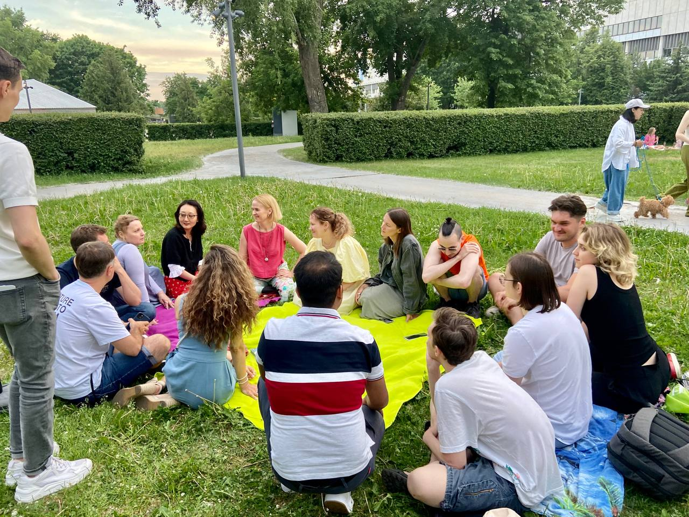
🥳 On August 31, the club turns 7. And this is the final chapter of #englishnataly_story.
Instead of walking through every milestone in order, I want to share the three things that mattered most — the ones that kept the club alive and helped it grow. If you're thinking about starting your own club or project, my experience might come in handy.
🔍 Omnipresence. I didn't do this from the very beginning — but I should have. About a year in, I created club pages on as many platforms as possible: social media, event websites, everywhere I could think of. Now, as a result, people discover the club from all sorts of places. You never know where your next guest will come from.
❤️ Core audience. The majority of any group will be regular participants. They are the heart of the club — the reason the community exists at all. It's a huge stroke of luck to meet people who truly appreciate what you do and stay with you for years.
🪨 Perseverance. Organizing a speaking club is a very, very unstable business. I had to change venues multiple times, sometimes at ridiculously short notice — once even 30 minutes before a session with around 40 people on their way! One day the house is full; the next, the group is tiny. Then a pandemic breaks out, and you watch everything you've built fall to pieces. But here's the thing: if you commit to finding solutions — no matter what — I'm sure you'll succeed. 💫
The end… for now. ✨
A Journey of a Thousand Miles
May 3, 2026 by Natalya Skachkova
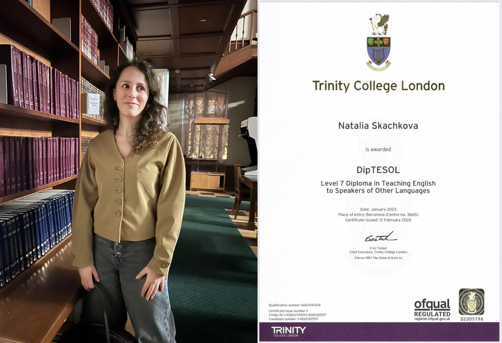
🏔️ A journey of a thousand miles begins with a single step. 🏔️
Some heights look unachievable — especially when you're standing at the starting point. I found myself there many years ago: reading about one of the most prestigious qualifications in English teaching, writing that goal down in my New Year's resolutions, dreaming that one day I might be ready to apply — while quietly accepting that it might never happen.
In December 2021, I opened my diary to find inspiration for the year ahead and figure out my next professional goal. That's when I stumbled upon Trinity DipTESOL among my old goals — one I had almost forgotten about. The application deadline was approaching, so I applied, got accepted, and told myself: one year to finish all the exams.
It took me four years instead of one. After a six-month intensive preparation course, I taught an international group of students, passed a phonology interview, took my written exam in Istanbul (which I had to organise entirely by myself), and finally submitted three coursework assignments — after several unsuccessful attempts.
I couldn't have imagined the complexities I'd face. Honestly, had I known how challenging it would be, I doubt I would have taken that leap. But here's what I learned: every unimaginable obstacle was made up of a series of single steps. When I felt exhausted and hated all three projects — even though I had a genuine interest in them — I started small. A bit of reading. A bit of editing. I focused on the enjoyable parts, like learning something new. I was determined to try and possibly fail, rather than never try at all.
This Diploma is one of the most important milestones of my life, and I'd be happy to celebrate it with you. 🥳
If You Think Your English is Bad
May 3, 2026 by Natalya Skachkova
"My English is bad. I make a lot of mistakes."
That's what some people think when they come to the club for the first time. Some even introduce themselves that way. But here's the thing: this way of thinking isn't helpful in the least.
📒 There's no such thing as "a bad level." Your level is defined on a spectrum — from A0 to C2. More often than not, the people who worry about their English being "bad" actually have B1 or even B2 — they participate in conversations, understand others, and express themselves just fine. What's far more helpful? Praise yourself for what you can already do. Identify what you need to reach the next level. Then take action.
📘 Everyone makes mistakes. I hold a C2 certificate in English, and I'm not a flawless speaker either. The difference is that higher-level speakers make subtle mistakes in advanced areas — but slips in basic grammar happen to all of us, especially when you're focused on the meaning you want to convey.
📙 Embrace fluency, not accuracy. When studying with a teacher or on your own, you have room for controlled, accuracy-based practice. But in the speaking club? It's time to let yourself free and build your confidence as a communicator. Accuracy still matters — there are just other ways to work on it outside the club. And here's the beautiful part: when you improve your accuracy, your fluency grows too — and vice versa.
📗 The main purpose of the club is joy. We enjoy ourselves to the full, warmly welcome new participants, and crack a lot of jokes. When I notice that someone's level isn't quite right for the main group, I give feedback privately and recommend our English.Light group — which some guests joined and still happily attend.
So if "bad English" is a thought that lives in your head, here's what you can actually do:
- Identify your precise level — online level tests are a good start.
- Choose resources for your level — coursebooks, online exercises, whatever works.
- Surround yourself with English and do what keeps you motivated.
- Seek opportunities for real communication — not just exercises, but actual conversations.
- And last but not least: even at C2, the journey doesn't end. Perhaps the most exciting part is only just beginning.
💭 Feel free to share your own stories of building confidence as a speaker of English. 💭
A Blast from the Past
May 3, 2026 by Natalya Skachkova
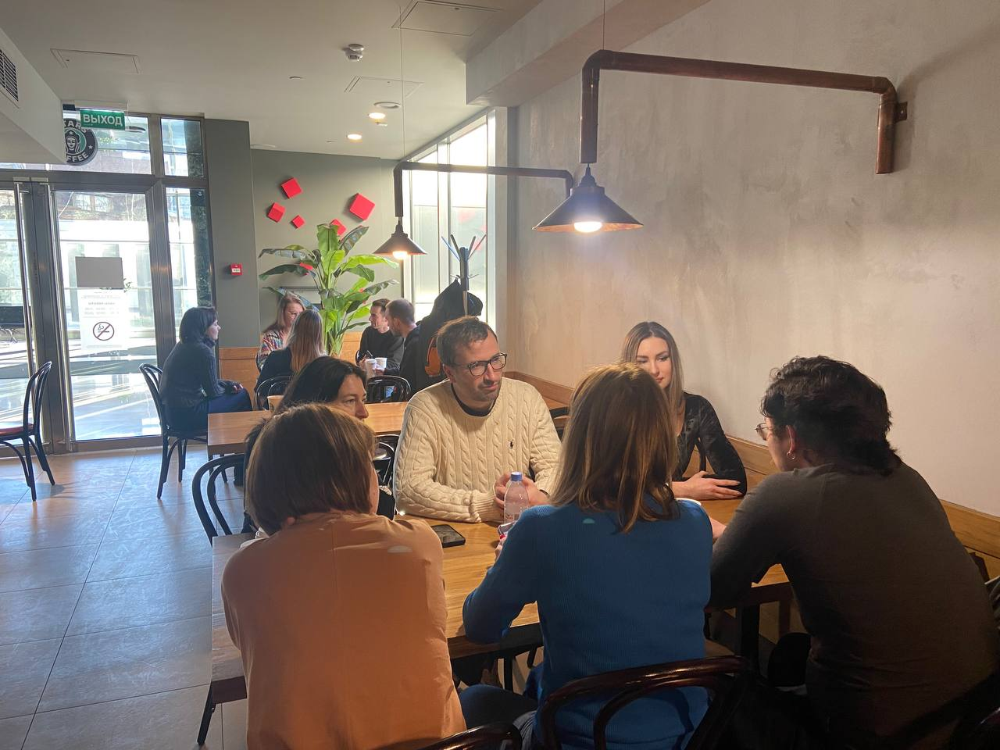
"I think I know you."
"I'm Alyona Koukoushkina."
"Really? I studied at Wordshop Academy 10 years ago. What a blast from the past!"
Here's a fact from my professional biography: before becoming an English teacher, I worked in advertising — doing all sorts of creative things: devising ideas for ad campaigns, writing slogans, copy, and video scripts.
And here's another: I completed a 2-year programme at Wordshop Academy, a creative school where I studied copywriting alongside related subjects like video direction and digital advertising.
So at one of our speaking sessions, I stumbled upon Alyona — she had gotten curious about the club and asked for our contacts. I couldn't believe my eyes. A long-forgotten memory, suddenly right in front of me. Alyona happens to be the head of the music video faculty at Wordshop. And just like that, all the memories came flooding back.
Out of this serendipitous moment came an unexpected offer: to write my success story for the Academy's website. Truth be told, I've never thought of the club as "a success" — it's simply my form of existence. But I do hope my story can inspire someone to follow their interests and passion.
📎 Read the article here: Ненужных знаний не бывает
This is the music video faculty channel run by Alyona: @wordshop_music_video
I'm truly grateful for this wonderful opportunity — and I can't help but think: What a small world! 🌏
How to Strike Up a Conversation with a Stranger
May 3, 2026 by Natalya Skachkova
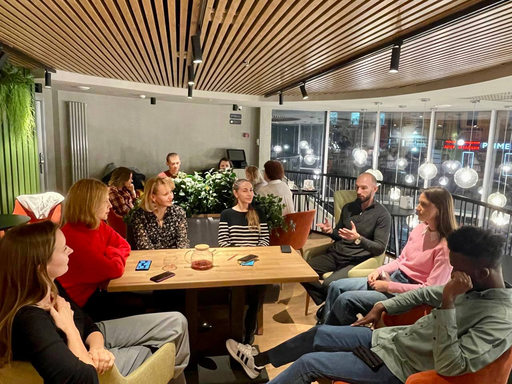
"How do I strike up a conversation with a stranger? What if I don't know what to talk about? What if some topics feel too hard to discuss?" 💭
These questions pop into your head before coming to the club — and that's completely natural. But we've got some good tips to put your mind at ease.
🟡 First: conversation cards. At every session, there are plenty to choose from. Decide with your partner which questions could spark an interesting chat for both of you — and feel free to skip the ones you have no clue about. That's absolutely fine!
🟡 Before the cards, break the ice with small talk. Here are some universal questions to get things going:
💭 How's your day been so far?
💭 What have you been up to lately?
💭 What's been the highlight of your week? (my all-time favourite!)
💭 Make a compliment: "I couldn't help but notice your wonderful…" (accessory, style, accent, level of English)
💭 What brings you to this event?
💭 Do you come to these kinds of gatherings often?
🟡 And some helpful tips from our guests. You can always fall back on one of these small talk tactics:
FORD — Family, Occupation, Recreation, Dreams
HEFE — Hobbies, Entertainment, Food, Environment
And here are two questions that can step up from the mundane to something deeper:
"What do you do?"
"Why do you do it?"
That second one takes you from the world of facts to the world of values.
We hope you're now fully equipped for your next English conversation. 😊
Speak soon!